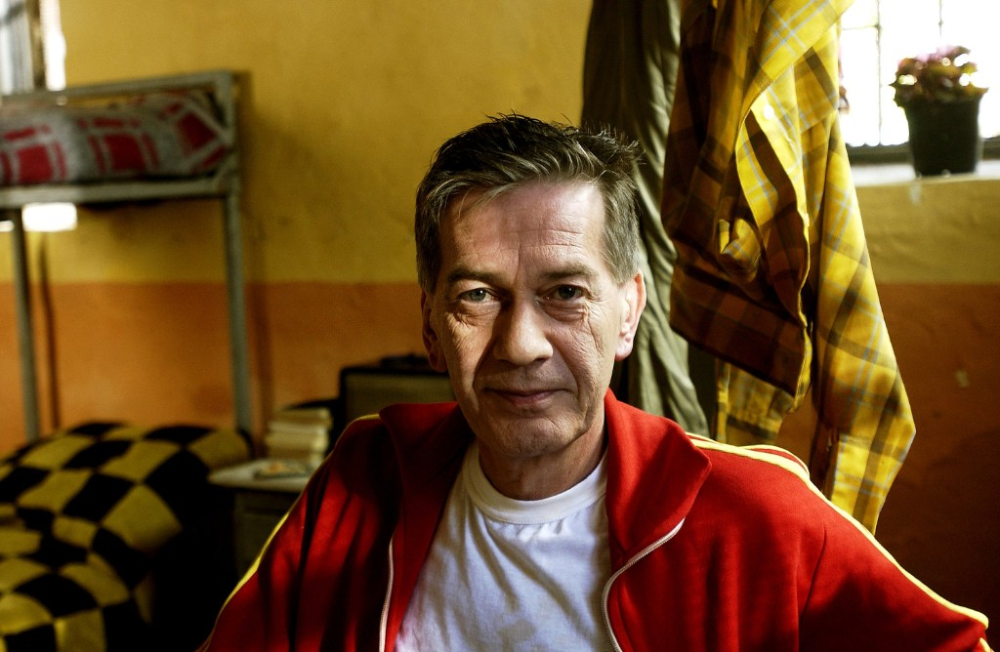

55. ULUSAL YARIŞMA ONUR VE EMEK ÖDÜLLERİ BELLİ OLDU!
Bu yıl 30 Eylül - 4 Ekim tarihleri arasında ikinci kez düzenlenecek 55. Ulusal Yarışma’da Onur Ödülü, usta oyuncu Ayla Algan’a takdim edilecek.
Bu yıl ayrıca Ulusal Yarışma’da kariyerlerinde yüzden fazla filme imza atarak Türkiye sinemasının bütününe büyük emeği geçmiş isimler, Aram Gülyüz, Atıf Yılmaz, Çetin İnanç, Nejat Saydam, Oğuz Gözen, Orhan Elmas, Osman Fahir Seden, Semih Evin, Sırrı Gültekin ve Ülkü Erakalın, Yavuz Figenli veYücel Uçanoğlu’na teşekkür plaketi verilecek. Sinemanın ve sinemaseverlerin görünmeyen kahramanlarına verilen Sinema Emek Ödülü, bu yıl dublör Burhan Kocataş’a sunulacak.Çağdaş Sinema Oyuncuları Derneği- ÇASOD ise bu yılın Yıldırım Önal Anı Ödülü’nü tiyatro ve sinema sanatçısı Ferhan Şensoy’a emanet edecek.
55. Ulusal Yarışma’nın bu seneki Onur Ödülü, 4 Ekim akşamı Cahide Müzikhol’de gerçekleşecek kapanış töreninde Ayla Algan’a takdim edilecek. Algan’ın, 1965’te Ertem Göreç ile başlayan sinema macerası, Halit Refiğ, Atıf Yılmaz, Memduh Ün, Tunç Başaran, Aram Gülyüz, Ferzan Özpetek, Barış Pirhasan gibi yönetmenlerle devam etti. Aynı zamanda şarkı da söyleyen ve 1971’de Paris’in ünlü konser salonu Olympia’da sahneye çıkan Algan, 1972’de Devlet Sanatçısı unvanı aldı ve UNICEF Onur Ödülü’ne layık görüldü. Kadın hikâyeleri anlatan birçok tiyatro oyununun yönetmenliğini üstlendi, sayısız oyuncu yetiştirdi. 55. Ulusal Yarışma, cesur rol seçimleri, karakterlere kattığı derin ve dokunaklı yaklaşımı, eğitmen olarak oyunculuğa yaptığı sonsuz katkı sebebiyle bu yılki Onur Ödülü’nü Ayla Algan’a sunacaktır.
55. Ulusal Yarışma 100’ler Teşekkür Plaketi

Ulusal Yarışma bu sene ödül gecesinde Yeşilçam’da yüzler kulübüne giren 12 “görünmez kahramana” plaket vererek onları onurlandırmayı amaçlıyor. Kariyerlerinde yüz filmi aşan, yüzden fazla filme imza atarak Türkiye sinemasının bütününe büyük emeği geçmiş isimlerden Yücel Uçanoğlu, Çetin İnançve Yavuz Figenli’ye plaketleri ödül gecesinde takdim edilecek. Aramızdan ayrılan Aram Gülyüz, Atıf Yılmaz, Nejat Saydam, Oğuz Gözen, Orhan Elmas, Osman Fahir Seden, Semih Evin, Sırrı Gültekinve Ülkü Erakalın’ın ise yakınları yönetmenlerin ödüllerini alacak.
55. Ulusal Yarışma Sinema Emek Ödülü
Sinemanın ve sinemaseverlerin görünmeyen kahramanlarına verilen Sinema Emek Ödülü, bu yıl dublör Burhan Kocataş’a sunulacak. Tehlikeli sahnelerin isimsiz aktörlerinden Burhan Kocataş, 40 yılı aşkındır süren sinema hayatına 70’li yıllarda, Cüneyt Arkın, Yılmaz Köksal, Sadri Alışık, Kadir İnanır, Serdar Gökhan ve Eşref Kolçak gibi ünlü aktörlerle dövüşerek başladı. Sinemamızın ilk aksiyon yapımlarında yer aldı; zor sahnelere gerçekçilik katmak için canı pahasına çalıştı. Burhan Kocataş, bugün de hala sinema dünyasında olmanın yanı sıra, genç dublör adaylarını da yetiştiriyor.
Çağdaş Sinema Oyuncuları Derneği - Yıldırım Önal Anı Ödülü 2018

1999’dan bu yana Antalya Film Festivali’nde Çağdaş Sinema Oyuncuları Derneği - ÇASOD tarafından verilen Yıldırım Önal Anı Ödülügeçen yıl olduğu gibi bu yıl da Ulusal Yarışma’da takdim edilecek. Bu seneki Yıldırım Önal Anı Ödülü, kendine özgü mizahi üslubuyla toplumun her kesiminden insanı güldüren ve düşündüren; “Çok Tuhaf Soruşturma” isimli tiyatro oyunundan uyarladığı ve rol aldığı “Pardon” filmi ile Türkiye sinema tarihinin kusursuz taşlamalarından birine imza atan; eserleri ile izleyicilerinin ve okurlarının gönlünde taht kuran değerli tiyatro ve sinema sanatçısı; roman, deneme, günlük, oyun, senaryo yazarı; Ortaoyuncular Tiyatro Topluluğu’nun kurucusuFerhan Şensoy’a takdim edilecektir.